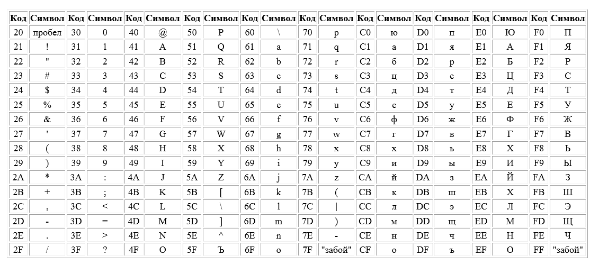

Представление действительных чисел
Цель: изучить математические действия над двоичными числами и системы кодировки используемые в ПК.
План:
1. Арифметика в двоичной системе счисления.
2. Виды кодировок символов.
3. Таблицы кодировок.
АРИФМЕТИКА В ДВОИЧНОЙ СИСТЕМЕ СЧИСЛЕНИЯ.
Теперь, когда мы познакомились с разными системами счисления, представлением в них дробных и отрицательных чисел, приступим к изучению собственно арифметики.
Никаких принципиальных отличий в арифметических действиях в системах счисления, отличных от десятичной, нет. Необходимо преодолеть лишь небольшой психологический барьер, и двоичная, восьмеричная и шестнадцатеричная арифметики покорятся навеки.
СЛОЖЕНИЕ
Следующие простые правила иллюстрируют операцию сложения положительных целых чисел в двоичной системе счисления:
В последнем правиле произошло увеличение разрядности суммы по сравнению со слагаемыми на 1 бит. Такой бит называют битом переноса (carry bit). Пусть требуется сложить два положительных целых числа в двоичной системе счисления:
ВЫЧИТАНИЕ
Аналогичные правила действуют и для операции вычитания:
УМНОЖЕНИЕ
Операцию умножения можно производить привычным способом в столбик:
КОДИРОВАНИЕ СИМВОЛОВ. ВИДЫ КОДИРОВОК. ТАБЛИЦЫ ASCII. UNICODE.
Можно ли считать выражение лица кодировкой мыслей?
А. Алешин
Помимо цифр, на мониторы ЭВМ необходимо выводить еще и множество символов. Ясно, что для вывода каждого символа необходим некий машинный код, однозначно соответствующий этому символу, или некое правило, по которому можно организовать корректный вывод каждого символа на дисплей. Разумеется, разрабатывать такую систему ввода-вывода следует оптимальным образом с точки зрения потребления ресурсов компьютера. Особенно важно в этом случае помнить о том, что производительность компьютеров в отдаленные времена зарождения вычислительной техники была ничтожной, с современных позиций, а системные программисты и разработчики аппаратной части боролись за каждый бит, адрес, инструкцию, регистр, освобождая оперативную память и адресное пространство компьютерных "малышей".
Давайте подсчитаем, сколько необходимо символов для вывода информации на дисплей. Исторически сложилось так, что первые разработчики компьютеров были носителями английского языка. Что им было необходимо обеспечить для вывода на монитор? Во-первых, 26 букв английского алфавита (строчных), во-вторых, 26 прописных, 9 знаков препинания (. , : ! " ; ? ( ) ), пробел, 10 цифр, 5 знаков арифметических действий (+,-,*, /, ^) и специальные символы (№ % _ # $, и так далее ^, &, >, <, |, \). Получается чуть больше сотни символов. Такой сравнительно небольшой базовый набор символов можно закодировать при помощи таблиц соответствия этого набора машинным кодам (фактически, двоичным числам). Можно вполне ограничиться набором двоичных чисел от 0 до 27 (всего 128 позиций), что и было сделано. Таблица соответствия получила название ASCII (American Standard Code for Information Interchange). В рамках таблицы ASCII создание многоязычных документов являлось очень проблематичной, а в большинстве случаев и совершенно невыполнимой задачей.
Рассмотрим структуру таблицы ASCII. Для удобства символы в ней пронумерованы в шестнадцатеричной системе счисления от 0 - 7F. Первые знакоместа в таблице занимают непечатаемые символы (0 до 7F), затем следуют печатаемые символы (20 - 7F).
ТАБЛИЦА ASCII
непечатаемые символы
печатаемые символы
Однако базового набора кодов стало быстро не хватать. Возросший дефицит знакомест в стандартной таблице ASCII потребовал ее немедленного расширения. В результате возникла новая таблица кодировок, получившая название "расширенная таблица ASCII", число знакомест в которой возросло до 28 (256 знакомест). Эта таблица получила название международного стандарта IS 646, а восьмибитный код - Latin-1. В него были добавлены в основном латинские буквы со штрихами и диакритические символы. Вскоре появился новый стандарт IS 8859, в котором вводилось понятие "кодовая страница", т.е. набор из 256 символов для определения языка или группы языков, т.е. IS 8859-1 это Latin-1, IS 8859-2 включал славянские языки с латинским алфавитом (чешский, польский, вергерский), IS 8859-3 включал турецкий, мальтийский, эсперанто, галисийский языки, и т.д. Недостатком такого подхода является то, что программное обеспечение должно следить за кодовыми страницами, смешивать языки при этом невозможно, кроме того не были созданы кодовые страницы японского и китайского языков.
UNICODE
В январе 1991 года возник консорциум UNICODE (Unicode Consortium), целью которого является продвижение, развитие и реализация стандарта Unicode как международной системы кодирования для обмена информацией, а также поддержание качества этого стандарта в будущих версиях.
Стандарт UNICODE 4.0 представляет собой новую систему кодирования символов, выводимых на экран монитора или на принтер, позволяющую закодировать 1 114 112 символов (в стандарте из принято называть code points). Большинство символов, используемых в основных языках мира занимают 65 536 code points, образуя Basic Multilingual Plane (BMP) (Основной Многоязычный Уровень - мой перевод). Оставшиеся (более миллиона) code points вполне достаточно для кодирования всех известных символов, включая малораспространенные языки и исторические знаки. Стандарт UNICODE поддерживается тремя формами, 32-битной (UTF-32), 16-битной (UTF-16) и 8-битной (UTF-8). Восьмибитная форма UTF-8 была разработана для удобной совместимости с ASCII-ориентироваными системами кодирования. Стандарт UNICODE совместим с Международным стандартом International Standard ISO/IEC 10646.
Наиболее просто устроена форма UTF-32. В ней каждый символ закодирован при помощи 32-битного блока. Благодаря этому каждый символ UTF-32 обладает однозначным соответствием между декодированным символом и блоком кода. Это форма имеет фиксированную длину знакоместа. Она покрывает все кодовое пространство UNICODE - 0...10FFFF16. Это гарантирует полную совместимость с UTF-16 и UTF-8. Форма UTF-32 является наиболее предпочитаемой для большинства UNIX платформ.
Стандарт UNICODE содержит 96 382 символа, взятых их мировых шрифтов. Этих символов более чем достатонно для общения на всех известных языках мира, а также для написания классических (исторических ) шрифтов многих языков. UNICODE всключает в себя шрифты европейских алфавитов, средне-азиатское письмо, направленное справа на лево, шрифты Азии, и многие другие. Подмножество символов (code points) HUN включает 70 207 идеографических символов определяемых по национальным и промышленным стандартам Китая, Японии, Кореи, Тайвани, Вьетнама и Сингапура. Более того, UNICODE содержит знаки пунктуации, математические символы, технические символы, герметрические фотмы и графические метки (dingbats), фонетические знаки.
Ниже приведена сравнительная таблица кодов ASCII и UNICODE, взятая из Фрагмента спецификации UNICODE 4.0 (Unicode Standard, Version 4.0), размещенного на сайте Unicode Consortium.
Кодовая таблица для кириллицы приведена на следующем рисунке (взято из Фрагмента спецификации UNICODE 4.0 (Unicode Standard, Version 4.0), размещенного на сайте Unicode Consortium.
КОДИРОВКИ WIN1251, KOI7, KOI8R И ДРУГИЕ
Что один человек закодировал, то другой завсегда раскодировать сможет. Сможет ли?
А. Алешин
Рассмотрим наиболее известные и важные виды кодировок, используемые в разных операционных системах. Особое внимание уделим, конечно, кириллическим кодировкам, а именно WIN1251, KOI7, KOI8R и др. Ранее, в разделе 7.1, мы познакомились со стандартными английскими кодировками типа ASCII и новейшими универсальными кодировками Unicode. Однако исторически появлению Unicode предшествовала целая серия кириллических кодировок, которые и сейчас еще активно и часто используются в операционных системах и Интернет.
KOI-7
Кодировка KOI-7 (KOИ-7, Код Обмена Информацией, 7-ми битный) позволяет кодировать 27 = 128 символов, из которых 32 буквы русского алфавита, 26 букв латинского алфавита, 10 цифр и 26 печатаемых символа, пробел, специальные символы и непечатаемые символы. Коды непечатаемых символов находятся в диапазоне 00-20 (с ними можно ознакомиться в разделе 7.1, в таблице ASCII).
Замечательным правилом, действующим в этой кодировке является весовой принцип кодирования латинских символов, для которого верно правило: Веса кодов букв латинского алфавита увеличиваются на единицу в алфавитном порядке, то есть:
Код последующего символа = Код предыдущего символа + 1, или
Код D = Код C + 1, и так далее...
Пользуясь этим правилом, можно легко располагать слова в алфавитном порядке, поскольку эта операция сводится к простому сравнению двоичных чисел, соответствующих кодам символов. Для русских символов этот принцип несправедлив.
Каждый символ в кодировке KOI-7 представлен восьмиразрядным двоичным числом (фактически, это один байт). Младшие 7 знакомест предназначены для кода самого символа, а самый старший бит называется разрядом контроля четности и очень часто используется для контроля ошибок, особенно при передаче данных. В этот разряд вписывают такое число (0 или 1), чтобы сумма единиц, содержащихся в коде данного символа, было четным.
KOI-8R
Кодировка KOI-8R (KOИ-8, Код Обмена Информацией, 8-ми битный) позволяет кодировать 28 = 256 символов, в число которых входят 31 прописная и 32 строчных букв русского алфавита, 26 прописных и 26 строчных букв латинского алфавита, 10 цифр, 32 служебных знака и специальные символы, предназначенные для управления устройствами и передачи данных. Коды в диапазоне 21-5F соответствуют одинаковым символам как для KOI-7, так и для KOI-8R.
Кодировка KOI8-R

Win1251 (CP1251)
Кодировка Win1251 (CP1251, Code Page 1251, кодовая страница) сейчас является одной из наиболее распространенных в сети Интернет и персональных компьютерах (на которых установлена операционная система Windows. Все Windows приложения должны понимать эту кодировку без перевода.
CP866
Кодировка CP866 (Code Page 866, кодовая страница) в настоящее время можно назвать реликтом, поскольку ее используют компьютеры, работающие под операционной системой MS DOS и OS/2. Её же использует сеть ФИДО.
СЕМЕЙСТВО КОДИРОВОК 8859
Восьмибитное семейство кодировок 8859, созданное International Standorts Organization, ISO, для наведения порядка в восьмибитных кодировках, расширило таблицу ASCII для латинских букв с диакритикой и лигатур (кодировка ISO 8859-1), славянских языков с латинским алфавитом, например, чешский, польский, венгерский, (ISO 8859-2), турецкого, мальтийского, эсперанто, галисийского языков (ISO 8859-3), кириллицы (ISO 8859-5), арабского (ISO 8859-6), греческого (ISO 8859-7), иврита (ISO 8859-8) и других языков. Кириллическая кодировка этого семейства не получила широкого распространения, зато стандарт ISO 8859-1 (так называемая Latin-1) стала стандартом для "расширенной" латиницы и содержит практически все символы западноевропейских языков. Так, многие шрифты для Windows соответствуют кодировке ISO 8859-1 начиная с позиции 160 до конца таблицы, а в диапазоне 128-159 содержат дополнительные символы (длинное тире или "торговая марка", например). Именно в этом семействе появилось понятие "кодовая страница" (набор из 256 символов для каждого определённого языка или группы языков). Крупным недостатком такого подхода является невозможность смешивания языков в одном документе и отсутствие представления для китайского и японского языков.